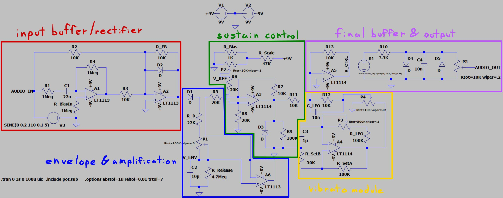
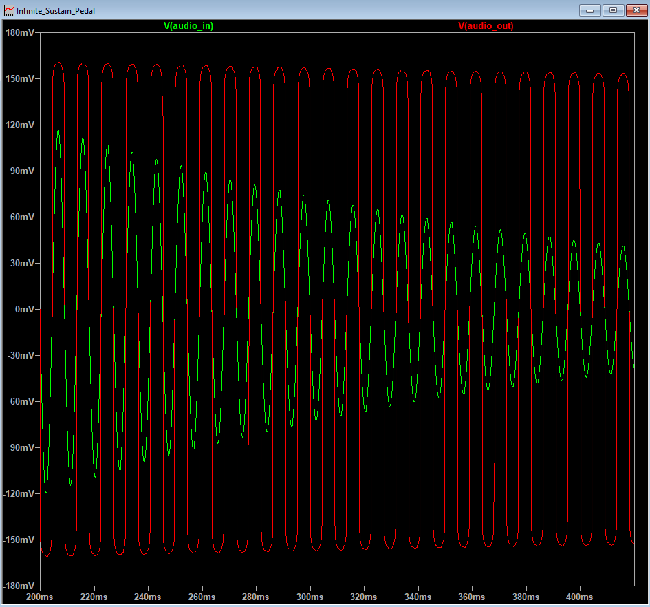

Infinite Sustain Pedal

Design of an analog infinite sustain guitar pedal, made up of the following stages:
- Input buffer and rectifier
- Envelope follower and amplification
- Sustain control
- Vibrato module
- Final buffer and output

